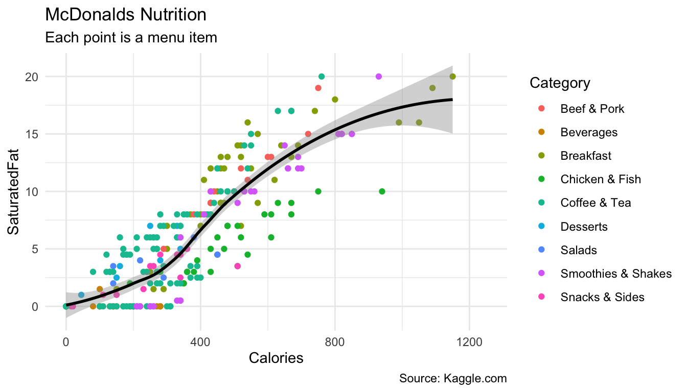
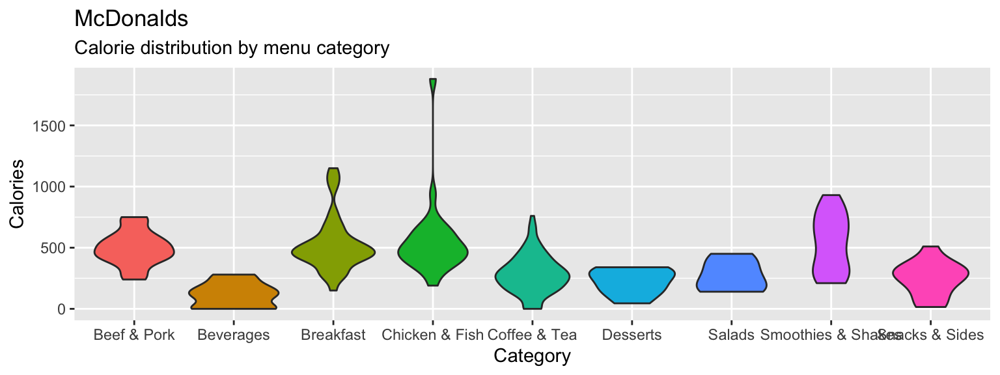
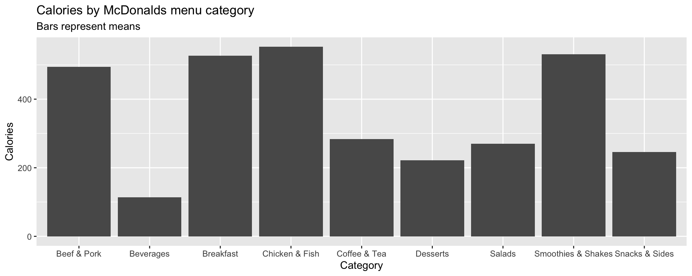
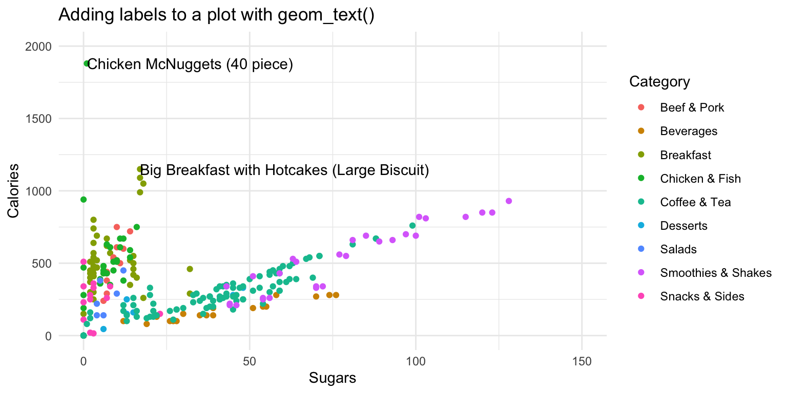

from today.com
Overview
In this practical you’ll practice plotting data with the amazing ggplot2 package. By the end of this practical you will know how to:
- Build a plot step-by-step
- Use multiple geoms
- Adjust colors and add labels
Tasks
A - Setup
Open your
BernRBootcampR project. It should already have the folders1_Dataand2_Code. Make sure that the data files listed in theDatasetssection above are in your1_Datafolder.Open a new R script. At the top of the script, using comments, write your name and the date. Save it as a new file called
plotting_practicalI.Rin the2_Codefolder.Using
library()load the set of packages for this practical listed in the Functions section above.
## NAME
## DATE
## Plotting Practical
library(XX)
library(XX)
#...For this practical, we’ll use the
mcondalds.csvdata set, which contains nutrition information about items from McDonalds. Usingread_csv(), load the data into R and store it as a new object calledmcdonalds.Take a look at the first few rows of the dataset(s) by printing them to the console.
You’ll notice that the
mcdonaldsdata frame has many column names with spaces and ‘bad’ characters like parentheses. Run the following code to fix that!
# Clean up the names of mcdonalds
mcdonalds <- mcdonalds %>%
select(-contains("% Daily Value")) %>% # Remove all '% Daily Value' columns
rename_all(.funs = ~ gsub(" ", "", .)) # no more spaces!- Now print the dataset again, do the names look better?
B - Building a plot step-by-step
In this section, you’ll build the following plot step by step.

- Using
ggplot(), create the following blank plot using thedataandmappingarguments (but no geom). UseCaloriesfor the x aesthetic andSaturatedFatfor the y aesthetic
ggplot(data = mcdonalds,
mapping = aes(x = XX, y = XX))- Using
geom_point(), add points to the plot
ggplot(data = mcdonalds,
mapping = aes(x = XX, y = XX)) +
geom_point()- Using the
coloraesthetic mapping, color the points by theirCategory.
ggplot(mcdonalds, aes(x = XX, y = XX, col = XX)) +
geom_point() - Add a smoothed average line using
geom_smooth().
ggplot(mcdonalds, aes(x = XX, y = XX, col = XX)) +
geom_point() +
geom_smooth() - Oops! Did you get several smoothed lines instead of just one? Fix this by specifying that the line should have one color:
"black". When you do, you should then only see one line.
ggplot(mcdonalds, aes(x = XX, y = XX, col = XX)) +
geom_point() +
geom_smooth(col = "XX") - Add appropriate labels using the
labs()function.
ggplot(mcdonalds, aes(x = XX, y = XX, col = XX)) +
geom_point() +
geom_smooth(col = "XX") +
labs(title = "XX",
subtitle = "XX",
caption = "XX")- Set the limits of the x-axis to
0and1250usingxlim().
ggplot(mcdonalds, aes(x = XX, y = XX, col = XX)) +
geom_point() +
geom_smooth(col = "XX") +
labs(title = "XX",
subtitle = "XX",
caption = "XX") +
xlim(XX, XX)- Finally, set the plotting theme to
theme_minimal(). You should now have the final plot!
ggplot(mcdonalds, aes(x = XX, y = XX, col = XX)) +
geom_point() +
geom_smooth(col = "XX") +
labs(title = "XX",
subtitle = "XX",
caption = "XX")+
xlim(XX, XX) +
theme_minimal()C - Adding multiple geoms
- Create the following plot showing the relationship between menu category and calories
ggplot(data = mcdonalds, aes(x = XX, y = XX, fill = XX)) +
geom_violin() +
guides(fill = FALSE) +
labs(title = "XX",
subtitle = "XX")
Include the additional argument
+ stat_summary(fun.y = "mean", geom = "point", col = "white", size = 4)to include points showing the mean of each distributionNow add
+ geom_jitter(width = .1, alpha = .5)to your plot, what do you see?Play around with your plotting arguments to see how the results change! Each time you make a change, run the plot again to see your new output!
- Change the summary function in
stat_summary()from"mean"to"median". - Change the size of the points in
stat_summary()to something much bigger (or smaller). - Change the
widthargument ingeom_jitter()towidth = 0. - Instead of using
geom_violin(), trygeom_boxplot(). - Remove the
fill = Categoryaesthetic entirely.
D - Summary statistics
- Create the following plot showing the mean number of calories for each menu category using the following template:
ggplot(XX, aes(x = XX, y = X)) +
stat_summary(geom = "bar",
fun.y = "mean") +
labs(title = "XX",
subtitle = "XX")
- Customize your plot!
- Instead of showing the
"mean", show the"median". - Give each bar a different color.
- Add overlapping points showing the individual items using
geom_point(),geom_count()orgeom_jitter().
E - Adding labels
Let’s create the following plot with additional point labels using geom_text():

- Start with the following template
ggplot(mcdonalds, aes(x = XX,
y = XX,
col = XX)) +
geom_point() +
xlim(XX, XX) +
ylim(XX, XX) +
theme_minimal() +
labs(title = "XX")Try adding labels to the plot indicating which item each point represents by adding
+ geom_text().Where are the labels? Ah, we didn’t tell
ggplotwhich column in the data represents the item descriptions. Fix this by specifying thelabelaesthetic in your first call to theaes()function. That is, includelabel = Itemunderneath the linecol = XX. Now you should see lots of labels!Customize your
geom_text()by including the arguments:geom_text(col = "black", check_overlap = TRUE, hjust = "left").Using the
dataargument ingeom_text(), specify that the labels should only apply to items over 1100 calories (hint:geom_text(data = mcdonalds %>% filter(XX > XX)))Play around!
- Specify that the size of the points should correspond to their Calories. Do this with the
sizeaesthetic. - Try using a different plotting theme. For example, you can try
theme_excel()included in theggthemespackage.
Examples
# ggplot2 -----------------------
library(tidyverse) # Load tidyverse (contains ggplot2!)
mpg # Look at the mpg data
# Just a blank space without any aesthetic mappings
ggplot(data = mpg)
# Now add a mapping where engine displacement (displ) and highway miles per gallon (hwy) are
# mapped to the x and y aesthetics
ggplot(data = mpg,
mapping = aes(x = displ, y = hwy)) # Map displ to x-axis and hwy to y-axis
# Add points with geom_point()
ggplot(data = mpg,
mapping = aes(x = displ, y = hwy)) +
geom_point()
# Add points with geom_count()
ggplot(data = mpg,
mapping = aes(x = displ, y = hwy)) +
geom_count()
# Again, but with some additional arguments
# Also using a new theme temporarily
ggplot(data = mpg,
mapping = aes(x = displ, y = hwy)) +
geom_point(col = "red", # Red points
size = 3, # Larger size
alpha = .5, # Transparent points
position = "jitter") + # Jitter the points
scale_x_continuous(limits = c(1, 15)) + # Axis limits
scale_y_continuous(limits = c(0, 50)) +
theme_minimal()
# Assign class to the color aesthetic and add labels with labs()
ggplot(data = mpg,
mapping = aes(x = displ, y = hwy, col = class)) + # Change color based on class column
geom_point(size = 3, position = 'jitter') +
labs(x = "Engine Displacement in Liters",
y = "Highway miles per gallon",
title = "MPG data",
subtitle = "Cars with higher engine displacement tend to have lower highway mpg",
caption = "Source: mpg data in ggplot2")
# Add a regression line for each class
ggplot(data = mpg,
mapping = aes(x = displ, y = hwy, color = class)) +
geom_point(size = 3, alpha = .9) +
geom_smooth(method = "lm")
# Add a regression line for all classes
ggplot(data = mpg,
mapping = aes(x = displ, y = hwy, color = class)) +
geom_point(size = 3, alpha = .9) +
geom_smooth(col = "blue", method = "lm")
# Another fancier example
ggplot(data = mpg,
mapping = aes(x = cty, y = hwy)) +
geom_count(aes(color = manufacturer)) + # Add count geom (see ?geom_count)
geom_smooth() + # smoothed line without confidence interval
geom_text(data = filter(mpg, cty > 25),
aes(x = cty,y = hwy,
label = rownames(filter(mpg, cty > 25))),
position = position_nudge(y = -1),
check_overlap = TRUE,
size = 5) +
labs(x = "City miles per gallon",
y = "Highway miles per gallon",
title = "City and Highway miles per gallon",
subtitle = "Numbers indicate cars with highway mpg > 25",
caption = "Source: mpg data in ggplot2",
color = "Manufacturer",
size = "Counts")Datasets
| File | Rows | Columns |
|---|---|---|
| mcdonalds.csv | 260 | 24 |
Functions
Packages
| Package | Installation |
|---|---|
tidyverse |
install.packages("tidyverse") |
ggthemes |
install.packages("ggthemes") |
Resources
Documentation
The main
ggplot2webpage at http://ggplot2.tidyverse.org/ has great tutorials and examples.Check out Selva Prabhakaran’s website for a nice gallery of ggplot2 graphics http://r-statistics.co/Top50-Ggplot2-Visualizations-MasterList-R-Code.html
ggplot2is also great for making maps. For examples, check out Eric Anderson’s page at http://eriqande.github.io/rep-res-web/lectures/making-maps-with-R.html
Cheatsheets

from R Studio